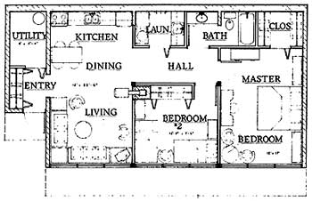
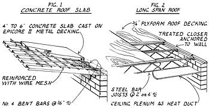
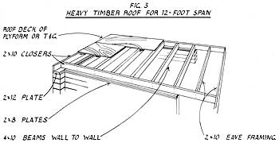
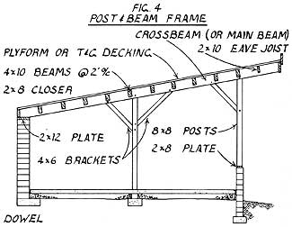

Follow an architect as he leads us through the planning, pouring, and pounding involved in . . .
All too many of us have found that building an energy-efficient home seems to be a dream . . . a fantasy that's kept just out of reach by escalating prices and high interest rates. Of course, MOTHER has long been exploring ways of breaking this vicious circle of waste, and one inventor of solutions-whose work we've shown you before (starting back in issue 67)-is architect Angus W. Macdonald. Angus has developed a number of housing designs that apply low-cost building techniques to passive solar, earth-tempered homes . . . and he's agreed to relate, in a series of articles that will span at least six issues of MOTHER, much of what he's learned about planning and building such structures. The series is following the actual construction of one of the architect's standard designs . . . Sun Cottage.
As we advance toward the final construction stages of your earth-tempered, passive solar home, the choice of building techniques broadens considerably. In the last issue of MOTHER, Part IV of this series discussed the two ways of erecting earth-sheltered walls (from either block or poured concrete), but there are at least four good options for the structural frame of your home. A deck of reinforced concrete may be cast to form the roof . . . steel bar joists, with concrete or heavy plywood decking, can be used to make earth sheltered roofs with long spans . . . heavy-timber roof framing can be set on structural masonry partitions, allowing the use of wooden decking . . . or a heavy-timber, post-and-beam framework of oak may be used in conjunction with tongue-and-groove (T & G) decking to provide an attractive, rustic interior. In this installment, we'll explore some of the practical options for the owner-builder, in hopes of helping you decide which technique best suits your situation.
As you consider the design of your roof, bear in mind that earth sheltering imposes extreme loads on a structure. Not only must the dead weight of water-saturated earth (with a possible surcharge of snow and ice) be considered, but large live loads, such as animal traffic and the weight of plantings, also need to be taken into account. Engineers plan on a total possible load of from 230 to 250 pounds per square foot (PSF) when figuring earth-sheltered roof capacity. And a heavier structure, such as one with a concrete-slab roof, must actually be designed to carry at least 250 PSF because of the weight of the concrete itself.
POUR IT YOURSELF
Spans of cast-in-place concrete roofs are generally limited to a maximum of 12 feet, but aren't as difficult to form properly as you might imagine. I recommend a product called Epicore II (made by Epic Metals Corporation, First and Talbot Avenues, Rankin, Pennsylvania 15104) to help owner-builders form concrete roof slabs. This deeply corrugated, heavy-gauge metal decking acts as both formwork and slab reinforcement for simple spans. The exposed metal ceiling can be painted, and has deep grooves for service laterals. During construction, Epicore II can support workers and wet concrete, provided that shores (sup ports) are placed every 6 feet. And it can generally span 12 feet, using a 4" slab reinforced only with wire mesh. This is a pre-engineered system that's fully documented by the supplier.
As you may recall from last issue's discussion, the concrete belt beam at the top of block walls can be omitted if you use concrete for your roof, because a roof slab acts as a diaphragm to stabilize the top of the wall. [EDITOR'S NOTE: Many terms used in this article are defined in the glossary on page 166 that accompanies our article about MOTHER's low-cost earth shelter.] To link the walls and roof together, bend No. 4 steel bars so that they reach from grouted block cavities into the roof slab (as shown in Fig. 1). As you position wire-mesh reinforcement, you can also place horizontal service runs that you might want to cast into the slab.
GO LONG
If you require a span longer than 12 feet to accommodate an open interior or for flexibility in locating partitions, a commercial system may be utilized to efficiently bridge up to 30 feet with earth loadings. Long-span, steel bar joists can go from the rear wall to the front facade, where they'll rest on a steel beam supported on steel pipe columns. This method requires welded connections but allows large window and door openings along the southern exposure. The steel joists are generally spaced on 2' centers (see Fig. 2) and must be sized according to span. (For most applications, though, you can expect them to be about 18 inches deep.) A thin concrete slab may be cast on corrugated or 3/4" plyform decking over these joists. When laying plywood decking, use H-clips and 1/16" clearance to allow for expansion between boards.
One prefabricated commercial system that I recommend is made by Mid-Atlantic Hambro, of Silver Springs, Maryland. The company provides a fully documented, pre-engineered composite joist system that allows 4' spacing with lengthy spans. The top chord of each joist projects up into the concrete roof deck, thereby strengthening each joist and reinforcing the slab. Wire mesh is the only additional reinforcement required. This system is easy for owner-builders to install because the hardware insures proper joist spacing. What's more, the 3/8" plywood used to form the deck can be reused after the concrete roof is set. Services run through the joists, above the ceiling that's attached to their bottom chords.
TIMBER
If you build your Sun Cottage with load-bearing masonry partitions, you can easily employ timber framing for tour earth-sheltered roof. For bearing walls that are 10 feet apart, use 4" X 8- selected oak beams, on 2' centers, from wall to wall. For 12' spans, use 4" X 10" beams. The beams rest on 2 X 8 treated top plates anchored to the belt beams by the 3/8" bolts mentioned in Part IV. Run a closer along each plate to form eave overhangs and to help soundproof between rooms (as shown in Fig. 3). All eave framing can be 2 X 8 treated lumber on 2' centers, since this area won't be covered with earth.
In this case, a 2 X 8 treated plate covers the rear wall or belt beam and is topped by a closer. For roof decking, you can use 3/4" plyform or treated 2" T & G boards for appearance. (The wood can be stained or oiled to produce an attractive ceiling.) Horizontal service runs may be laid across the top of the deck, and then holes can be drilled through to place fixtures. Roof insulation will cover the conduit. This bearing-wall design provides great thermal inertia, because of the mass involved in the masonry partitions, but does require more material than post-and-beam framing.
If you elect to use a post-and-beam, heavy-timber structure for your Sun Cottage, the same roof framing practices apply, but the notched beams are set into pockets of 8" X 12" crossbeams which, in turn, are supported by 8" X 8" posts on 8' centers. These crossbeams (or main beams) project beyond the front wall to support the eave that protects the south facade. Because oak isn't generally available in lengths greater than 16 feet, splices and diagonal brackets are used to join several members to form each crossbeam. (Since the joists are fashioned with pegs, they create the ornamental and visual interest of a post-and-beam frame.) Plates, decking, and service provisions for the post-and-beam frame are the same as those described for the heavy-timber roof.
A RAISING
Erecting a post-and-beam frame can be an exciting and pleasant experience. You start, by laying out all the pieces for a main-beam and post assembly on the floor to check dimensions for a proper fit. Any modifications should be made before you begin putting up the frame. Next, the post bottoms are drilled for dowels that connect them to the post pads (see Part III), and peg holes are bored to form tight-fitting joints. Assemble each front-to-rear post and crossbeam combination separately (see Fig. 4), driving the pegs home with heavy wooden mallets.
Then raise each assembly (which is now called a bent), fitting the posts over their dowels and placing the rear beam end onto its rear-wall top plate. This operation is going to take more than one strong back: Oak posts and beams are heavy. A traditional raising, as post-and-beam assembly is called, is accompanied by food and drink for all hands. The picnic should be laid out under a nearby tree after the frame is completed. With a crew of four to seven, a Sun Cottage single-story raising will make a good morning's work. The roof can be decked of in the afternoon by whoever is still willing to work.
But back to the job at hand: Temporarily brace the first raised bent in a vertical position, but don't fasten it to the top plate until the rest of' the bents and beams have been positioned. Raise and brace the remaining bents, and connect them initially with the beams running above the front wall. Once the bents are all linked, the structure can be adjusted with heavy mallets so that the ends of all the remaining 8' beams can be inserted into their main-beam pockets. Measure the entire roof to insure that it's square and slopes evenly before nailing on the eave framing, closers, and plates. Finally, tighten all of the pegs to firmly secure the joints. George Allman's company, Timber Smith Kits of Gordonsville, Virginia, produces pre-engineered, heavy-timber frames suitable for erection by owner-builders. [EDITOR'S NOTE: Write to Survival Consultants, at the address given at the end of this article, for additional information.]
To recap the systems we've described here, let's look back over some of the advantages and disadvantages of each. Concrete roofing systems are strong (they allow spans of up to 12 feet), and they provide thermal inertia through the mass of masonry. But concrete technology is too complex for the average owner-builder to handle unless a pre-engineered forming system is used. (Precast concrete avoids the problems of on-site casting, but we haven't discussed that approach here, as it's often unavailable or-because of transportation costs-prohibitively expensive for rural applications.)
If the building's floor plan requires long open spans, the only good alternative for the owner-builder is a pre-engineered steel joist system. Allowances must be made for the thickness of this system, however, since the joists themselves are likely to be 18 inches deep.
Heavy-timber framing is a workable alternative for owner-builders, either as a roofing system on structural partitions or as an entire post-and-beam framework. This approach combines speed of assembly with the softness and warmth of wood for residential interiors, but the thermal inertia of a concrete roof is lost. (Incidentally, throughout this article I've discussed using oak timbers in earth-sheltered roofs. If you decide to build aboveground, however, standard 2 X 8 pine can be used for super-insulated roof framing, and the decking may be built of 1/2" plywood.)
Once again, loadings are critical on earth-sheltered roofs, so carefully follow your plans or the advice of your engineer. Don't take shortcuts in creating the structure of your house. If you heed the advice of experts, you'll have a long-lasting frame for your passive solar home. In Part VI of this series, we'll cover the waterproofing, insulating, and finishing of your energy-efficient Sun Cottage.
Offset press plates, which are often available for little or nothing from printing shops, are easily worked sheets of high-quality aluminum alloy. Keep one around the barn or workshop, advises Bob Paris of Blanchard, Oklahoma, and it won't be long before you find a place where it'll come in handy. The plates can be used as covers for beehives or birdhouses, gutter flashing, or even roofing patches!
EDITOR'S NOTE: For our example in this series of articles, we've chosen the two-bedroom Sun Cottage, an expandable, earth-sheltered, passive solar plan with 1,023 square feet and an estimated building cost of $24,000 (assuming some owner assistance in construction). Angus W. Macdonald has drawn this plan according to HUD's Minimum Property Standards and the Building Officials and Code Administrators' (BOCA) building codes. Complete architectural drawings, specifications, and cost analysis may be purchased from Survival Consultants, Dept. TMEN, P.O. Box 21, Rapidan, Virginia 22733. You can also receive Angus' catalog of 12 low-cost, passive solar, earthtempered homes by sending $5.00 to Survival Consultants.
|
 |
 |
 |
|
 |
|
|